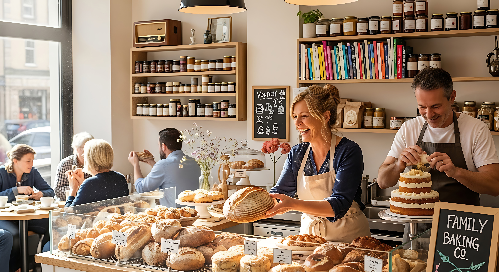

Fundada com a paixão por resgatar o verdadeiro sabor do pão artesanal, nossa padaria utiliza técnicas tradicionais combinadas com ingredientes de altíssima qualidade. Cada fornada é preparada nas primeiras horas da manhã para garantir que você leve para casa o melhor produto possível, feito com carinho e dedicação para a sua família.
